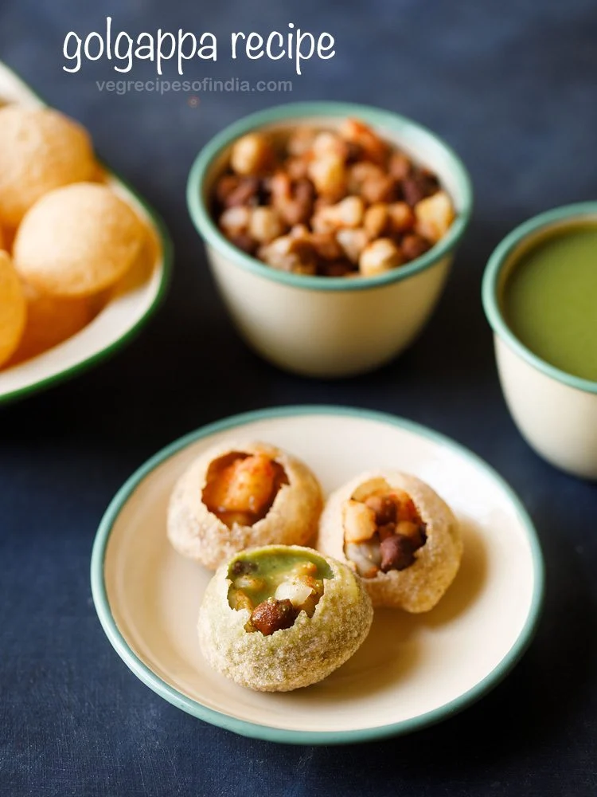

Gol Gappa
Gol gappa (also known as pani puri) is a popular bite-size chaat consisting of a hollow, crispy-fried puffed ball that is filled with potato, chickpeas, onions, spices, and flavoured water, usually tamarind or mint, and popped into one's mouth whole.
We have to check the ingredients first :-
- 1 cup sooji / semolina / rava
- 2 tbsp maida / plain flour / all purpose flour / refined flour
- pinch of baking soda
- half tsp salt
- 2 tsp oil
- ¼ cup water (or as required)
- oil for deep frying
Now how to make Gol Gappa :-

INSTRUCTIONS
- firstly, in a large mixing bowl take 1 cup sooji and 2 tbsp maida
also add pinch of baking soda, ¼ tsp salt and 1 tsp oil.
- combine all the ingredients well.
- further add ¼ cup water and start to knead.
knead to smooth and soft adding more water if required.
- grease the dough with oil. cover and rest for 20 minutes or untill the rava absorbs moisture.
- now knead the dough again making sure the dough is stiff absorbing moisture.
- divide the dough into half and dust with maida.
- furthermore, roll the dough as thin as possible using a rolling pin.
- take a small cup and start to make small puris.
- drop the prepared puri and press with the spoon to puff up.
- once they puff, it will automatically turn over. if not, once the bottom side is golden brown, turn over the puri.
- and fry the puri till golden brown and crisp.
- remove the puri and drain over tissue paper to remove excess oil.
- finally, golgappa puri is ready to prepare pani puri or bhel puri.
Back to home page